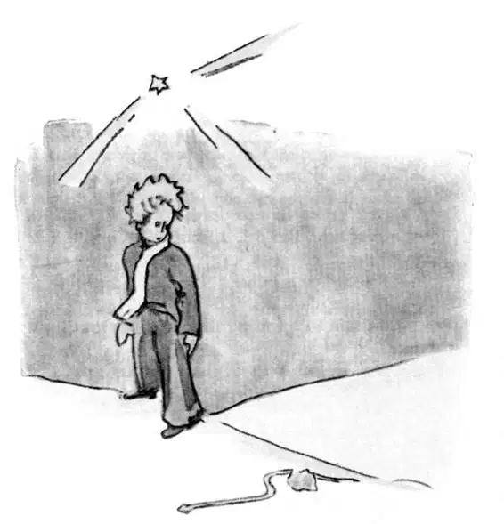

CHAPTER 17
第十七章
—the little prince makes the acquaintance of the snake
——小王子遇上蛇
When one wishes to play the wit, he sometimes wanders a little from the truth. I have not been altogether honest in what I have told you about the lamplighters. And I realize that I run the risk of giving a false idea of our planet to those who do not k now it. Men occupy a very small place upon the Earth. If the two billion inhabitants who people its surface were all to stand upright and somewhat crowded together, as they do for some big public assembly, they could easily be put into one public square twenty miles long and twenty miles wide. All humanity could be piled up on a small Pacific islet.
一个人想要耍点小聪明的时候，就会显得有点不真实。在有关点灯人的事情上，我并非一五一十地跟你们说了。因为我知道，我很可能会让那些不了解我们地球的人产生错误的想法。人类在地球上只占据非常小的空间。如果地球上这二十亿居民全部站着聚在一起，就像有时参加大的公共集会那样，那么一个二十英里见方的广场就可以很容易把他们都装下。太平洋里最小的一个岛屿就可以容纳所有人类。
The grown-ups, to be sure, will not believe you when you tell them that. They imagine that they fill a great deal of space. They fancy themselves as important as the baobabs. You should advise them, then, to make their own calculations. They adore fig ures, and that will please them. But do not waste your time on this extra task. It is unnecessary. You have, I know, confidence in me.
如果你告诉大人们这些话，他们肯定是不会相信你的。他们认为人类占据了很大的空间。他们认为自己和那些猴面包树一样重要。那么，你得建议他们自己计算一下。他们崇尚数字，那会让他们高兴。不过，还是不要浪费时间在这多余的工作上。没有这个必要。因为我知道，你们信任我。
When the little prince arrived on the Earth, he was very much surprised not to see any people. He was beginning to be afraid he had come to the wrong planet, when a coil of gold, the color of the moonlight, flashed across the sand.
当小王子来到地球上的时候，他很惊讶没有看到人。他开始担心自己来错了地方。这时，他看到一圈金灿灿的东西，月光一样的颜色，在沙地上闪闪发光。
"Good evening," said the little prince courteously.
“晚上好。”小王子彬彬有礼地说道。
"Good evening," said the snake.
“晚上好。”蛇回答他说。
"What planet is this on which I have come down?" asked the little prince.
“我来的这个地方是哪个星球啊？”小王子问。
"This is the Earth; this is Africa," the snake answered.
“这里是地球，是非洲。”蛇回答说。
"Ah! Then there are no people on the Earth?"
“啊！那地球上没有人吗？”
"This is the desert. There are no people in the desert. The Earth is large," said the snake.
“这里是沙漠。沙漠里没有人。地球是很大的。”蛇说。
The little prince sat down on a stone, and raised his eyes toward the sky.
小王子坐在一块石头上，抬头望着天空。
"I wonder," he said, "whether the stars are set alight in heaven so that one day each one of us may find his own again... Look at my planet. It is right there above us. But how far away it is!"
他说：“我想，星星在天上发着光，是不是好让我们有一天可以再次找到自己的那一颗啊……看，那是我的星球。就在我们的头顶上。可它是那么遥远！”
"It is beautiful," the snake said. "What has brought you here?"
“它很美。”蛇说道，“为什么要来这呢？”
"I have been having some trouble with a flower," said the little prince.
“我和一朵花闹了点矛盾。”小王子说。
"Ah!" said the snake.
“啊！”蛇说。
And they were both silent.
之后，他们两个都不说话了。
"Where are the men?" the little prince at last took up the conversation again. "It is a little lonely in the desert..."
“人们都在哪儿？”小王子终于又开始了对话。“沙漠里有点孤单呢……”
"It is also lonely among men," the snake said.
“有人的地方也一样地孤单啊。”蛇说。
The little prince gazed at him for a long time.
小王子注视了他很久。

"You are a funny animal," he said at last. "You are no thicker than a finger..."
“你是个很有趣的动物。”他最后说，“你不比一根手指头粗多少……”
"But I am more powerful than the finger of a king," said the snake.
“可我比国王的手指头都要厉害。”蛇说。
The little prince smiled.
小王子微微一笑。
"You are not very powerful. You haven't even any feet. You cannot even travel..."
“你没有多厉害啊。你甚至没长脚呢。你都不可能到处走……”
"I can carry you farther than any ship could take you," said the snake.
“我可以带你去任何船都去不了的地方。”蛇说。
He twined himself around the little prince's ankle, like a golden bracelet.
他盘在小王子的脚踝上，看上去就像金色的手镯一般。
"Whomever I touch, I send back to the earth from whence he came," the snake spoke again. "But you are innocent and true, and you come from a star..."
“无论我触碰到谁，我都能把他们送回到他们来的那个地方。”蛇又说。“可你很单纯，很真诚，而且你是从一颗星星上来的……”
The little prince made no reply.
小王子没有回答他。
"You move me to pity—you are so weak on this Earth made of granite," the snake said. "I can help you, some day, if you grow too homesick for your own planet. I can—”
“你让我心生怜悯——在这花岗岩构成的地球上，你是如此地弱小。”蛇说，“我能帮你，如果哪一天你太想家了，想回到你自己的星球上去的话。我能——”
"Oh! I understand you very well," said the little prince. "But why do you always speak in riddles?"
“噢！我非常明白你的意思，”小王子说，“可你为什么总是说谜语呢？”
"I solve them all," said the snake.
“所有谜语我都解开了。”蛇说。
And they were both silent.
于是他们又沉默不语了。